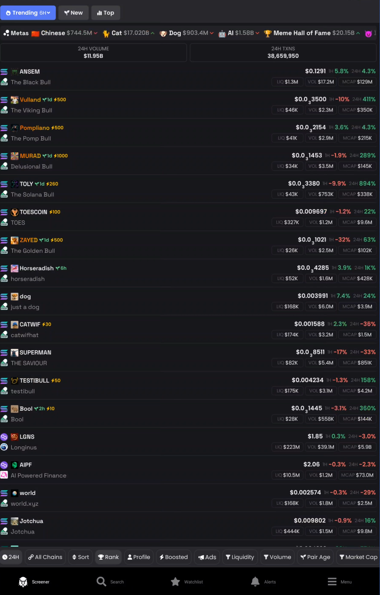
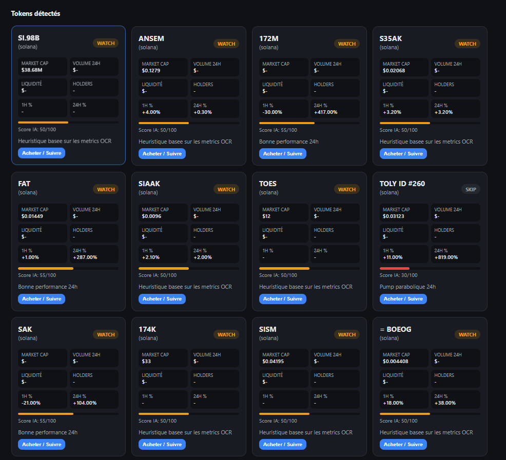
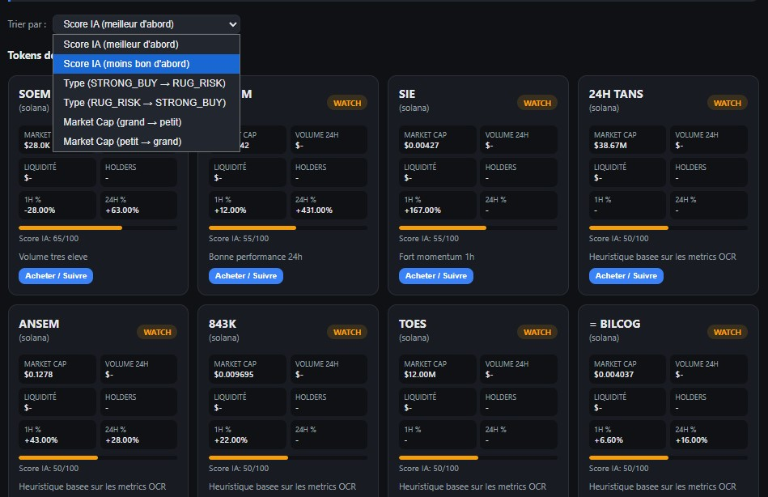
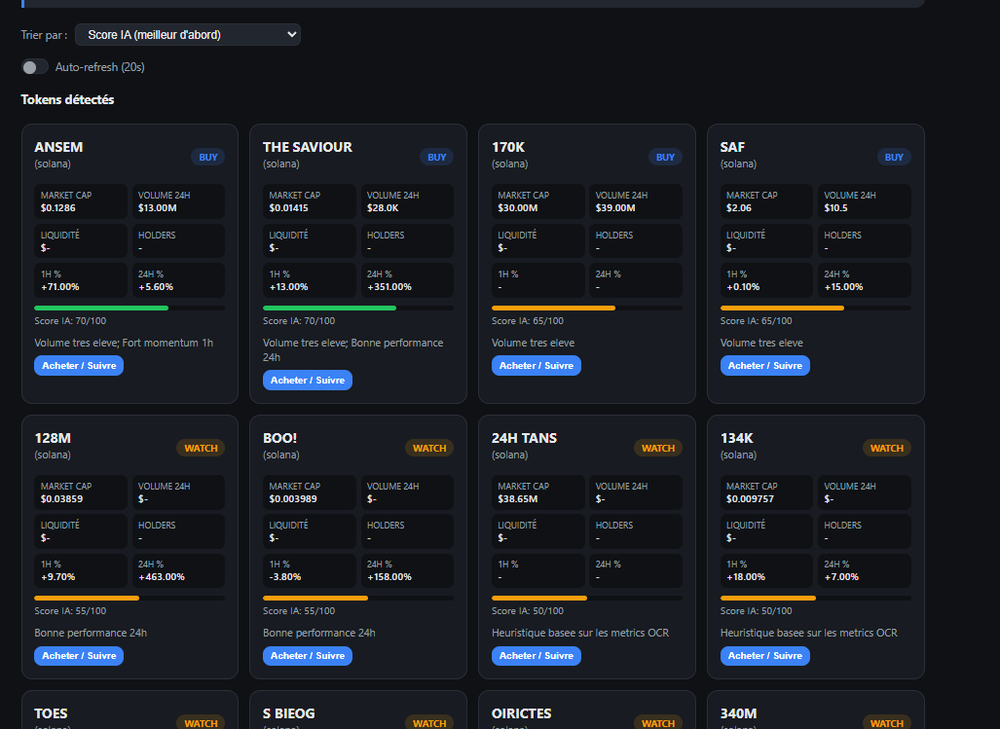

⚠️ Avant de lire : projet strictement instructif
Ce projet a été réalisé dans un but pédagogique uniquement. Les meme coins sont des actifs extrêmement volatiles et risqués. Ne mettez jamais en jeu des sommes que vous n'êtes pas prêts à perdre. Ce n'est pas un conseil financier, loin de là.
Alors voilà. Depuis quelques temps, je me suis mis à la crypto. Pas le Bitcoin ou l'ETH de grand-père, non. Je parle des meme coins, ces petits tokens qui peuvent monter de 500% en une heure… ou s'effondrer à zéro en dix minutes.
Quand on débute dans cet univers, c'est le bazar. Du vocabulaire incompréhensible, des dashboards avec des chiffres partout, des graphiques en bougie, des termes comme "market cap", "liquidité", "holders", "rug pull"… Bref, une jungle.
Plutôt que de juste regarder des vidéos YouTube en mode passif, je me suis dit : pourquoi pas coder un outil qui m'aide à comprendre tout ça en pratique ? L'objectif était clair : apprendre Flask (que je n'avais jamais vraiment utilisé), manipuler de l'OCR, et essayer de faire parler une IA locale sur des données crypto.
Et accessoirement, si ça peut m'aider à repérer un token intéressant avant qu'il ne pump, je dis pas non.
I - Description du projet
L'idée de base est simple : j'ouvre DexScreener (un site qui liste plein de tokens et leurs stats), mon outil fait une capture d'écran, lit les chiffres à ma place, et me dit "celui-là a l'air cool" ou "fuis, c'est un scam".
C'est un projet 100% local. Pas d'API cloud, pas de clé payante, tout tourne sur mon PC. L'IA analyse les données, attribue un score de 0 à 100, et donne une recommandation : STRONG_BUY, BUY, WATCH, SKIP, ou RUG_RISK (quand ça sent très mauvais).
On peut aussi ajouter des positions (genre "j'ai acheté 50$ de SHIB à tel prix"), suivre leur évolution, et demander conseil à l'IA pour savoir s'il faut vendre ou pas.
Le frontend ? Très basique. HTML, CSS, JS vanilla. Franchement je me suis pas pris la tête, ce n'était pas le but du projet. Je voulais apprendre le backend et l'OCR, pas faire un UI de fou.

II - Outils et pourquoi
Flask : j'avais envie de sortir de ma zone de confort (Laravel / NodeJS). Python pour le backend, ça colle bien avec tout l'écosystème IA. Et honnêtement, pour un petit projet comme ça, c'est rapide à mettre en place.
Tesseract OCR : c'est le moteur qui lit le texte sur les images. Gratuit, open source, et il tourne sur CPU. Pas besoin de GPU pour ça, ce qui est parfait quand on a déjà une IA locale qui bouffe la VRAM.
mss : une lib Python pure pour faire des captures d'écran. Pas besoin de compiler Pillow (qui galère sur Python 3.14), ça génère du PNG direct.
LM Studio : mon serveur d'IA locale. J'ai un modèle texte chargé dessus (genre gemma-4 ou qwen3.6) qui reçoit les données extraites par OCR et les analyse.
SQLite + SQLAlchemy : pour stocker les analyses et les positions. Simple, pas besoin d'installer un gros SGBD.
III - Premiers essais — Premiers problèmes
Au départ, je faisais une capture fullscreen. Grosse erreur. Mon bureau est un foutoir, j'ai Discord ouvert, des fenêtres partout. L'OCR récupérait tout et n'importe quoi. Des bouts de conversations, des notifications, des icônes… Impossible à parser proprement.
Deuxième idée — et c'était mon objectif initial : faire une observation en temps réel. Le programme scrute l'écran en permanence, détecte les changements de prix instantanément, et met à jour les scores en live. En théorie c'est le rêve. En pratique, c'est un cauchemar. L'OCR toutes les secondes ça bouffe du CPU, l'IA réanalyse tout le temps, et au final le PC rame sévèrement. Bref, le temps réel était mort-né.
On a donc dû partir sur une approche plus raisonnable : des captures à intervalle de temps. Pas du live, mais un rafraîchissement régulier et optimisé.
Troisième gros souci : je voulais utiliser un modèle de vision (VLM) pour que l'IA regarde directement le screenshot et comprenne tout seule. Sauf que ma carte graphique n'a pas assez de VRAM pour charger un modèle vision + un modèle texte en même temps. Résultat : soit ça plante, soit c'est d'une lenteur…
Il a donc fallu trouver une autre méthode.
IV - Ça marche ! Et améliorations
La solution finale que j'ai adoptée, c'est un pipeline en trois étapes :
- Capture ciblée : plutôt que le fullscreen, je capture soit une zone précise que je sélectionne à la souris, soit directement une fenêtre (genre mon navigateur avec DexScreener). Propre, rapide, pas de bruit.
- OCR avec Tesseract : j'ai dû ajuster le mode de Tesseract (passage en PSM 11 "sparse text") pour bien gérer les layouts en grille de DexScreener. J'ai aussi retravaillé le parser pour qu'il comprenne le texte bruité de l'OCR, avec des règles plus souples.
- Analyse par IA textuelle : au lieu de faire regarder l'image à l'IA, je lui envoie le texte extrait par l'OCR. L'IA (modèle texte local) analyse les metrics et affine les scores.
Pour le côté "rafraîchissement", plutôt que du temps réel impossible, j'ai mis en place un système d'auto-refresh toutes les 20 secondes. Mais avec une optimisation clé : si le screenshot n'a pas changé (hash OCR identique), on ne réanalyse rien. Les scores restent en cache. Ça évite de spammer l'IA et de remplir la base de données pour rien.
J'ai aussi ajouté un système de tri sur les tokens détectés : par score IA, par type de recommandation, ou par market cap. Pratique pour voir rapidement les meilleures opportunités.



Conclusion
Ce projet m'aura pris une journée. Une journée intense où j'ai appris énormément : Flask, OCR, gestion de cache, et surtout la patience nécessaire quand ton IA locale te répond en prose au lieu de JSON.
C'est un projet purement instructif. Le frontend est moche, l'analyse n'est pas infaillible, et je ne conseillerais à personne de trader avec ça. Mais c'était exactement le but : apprendre en construisant quelque chose de concret, dans un domaine qui m'intéresse.
Et au passage, j'ai appris un vocabulaire crypto que je ne connaissais pas. Market cap, liquidité, holders, rug pull, pump, dump… Quand on code un outil autour de ça, on est obligé de comprendre ce que ça signifie.
Bref, un projet fun, un peu débile sur les bords (analyser des meme coins sérieusement, quand même), mais qui m'a fait progresser. La prochaine fois, peut-être que je tenterai de brancher une vraie API crypto pour avoir des données temps réel sans OCR. Ou pas. On verra.
PS : Pour la première fois, j'ai réellement utilisé un projet que j'avais codé pour prendre une décision… et j'ai gagné 2-3€. C'est pas la retraite à 33 ans, mais c'est déjà ça.